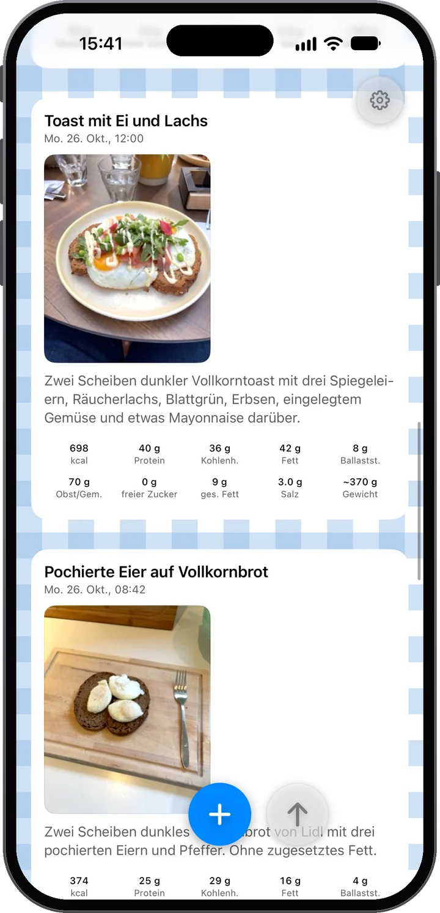
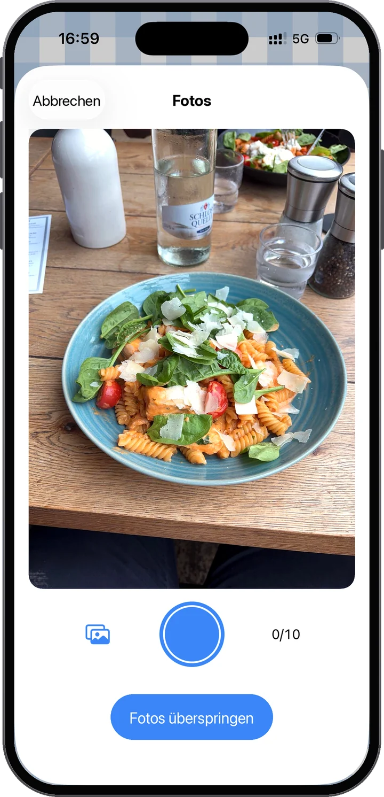
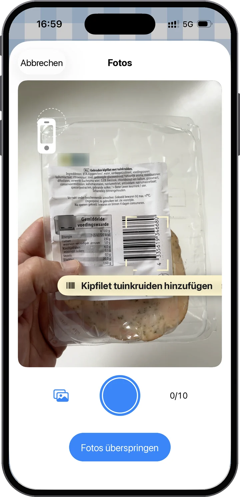
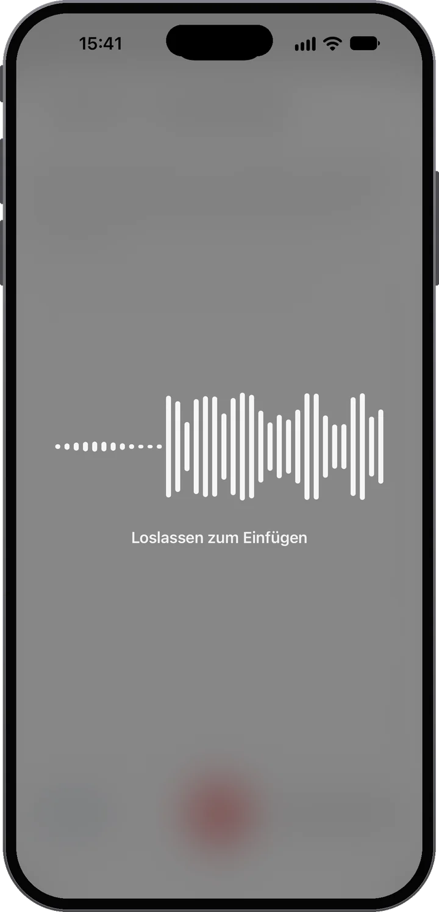
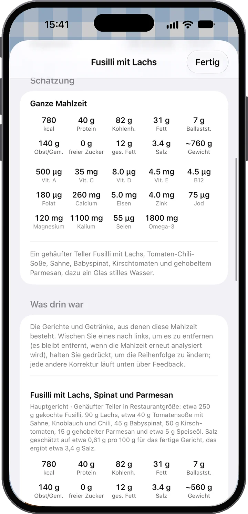
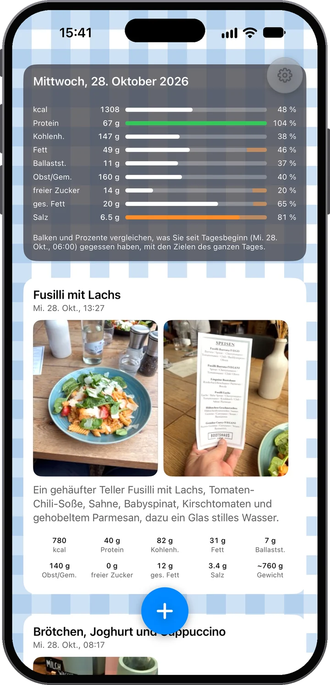
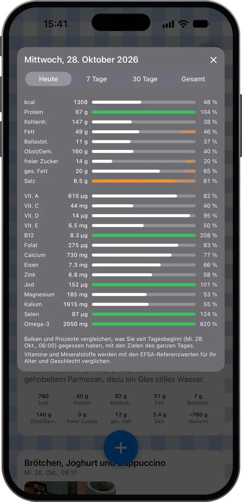

Sieh sie. Versteh sie.
Knips dein Essen und Food Moments macht daraus einen Feed deines Tages: Fotos zuerst, gleich darunter, was wirklich drinsteckt. Sag, was das Foto nicht zeigt — und sieh, wo dein Tag steht, bevor du das nächste Mal isst.

Fast kein Aufwand rein — viel Verständnis raus.
Fotografiere dein Essen — ein Foto oder mehrere. Dann gib Kontext dazu: Tippe eine Notiz, oder halte einfach das Mikro gedrückt und sprich. „Zwei Spiegeleier und das kleine Brötchen“ — mehr braucht es nicht.
Die Mahlzeit wird für dich analysiert: Energie, Eiweiß, Kohlenhydrate, Fett, Ballaststoffe, Obst und Gemüse, freier Zucker und Salz, Gericht für Gericht, und sie sagt offen, wie sicher sie ist — und sieh, wie sie in deinen Tag passt.
Über den Tag füllt sich dein Feed, und die Tagesbalken wachsen mit. Du siehst, wie sich dein Essenstag entwickelt und wo du stehst — bevor du die nächste Mahlzeit wählst, nicht danach.
Den ganzen Tag brav gewesen? Deine Balken zeigen es. Also nimm den Nachtisch — und fühl dich gut dabei: Du liegst noch im Ziel, und das sagen deine eigenen Daten, keine Vermutung.

Fotos zuerst
Das Foto ist die wichtigste Quelle. Die Analyse erkennt die Gerichte und Portionen — sogar eine Nährwerttabelle oder einen Barcode, wenn einer im Bild ist. Und es muss nicht ein Foto sein: Eine Mahlzeit kann bis zu zehn haben. Du kochst heute? Fotografiere die Zutaten nebenbei und am Ende den fertigen Teller — die Analyse setzt alles zusammen.

Oder den Barcode scannen
Halt die Kamera auf einen Barcode, und Food Moments findet das Produkt samt Nährwerttabelle — ganz ohne Foto. Ein paar Produkte gescannt, und sie werden eine Mahlzeit; mach ein Foto von dem, was du gekocht hast, dazu, und die Analyse nutzt die genauen Werte vom Etikett. Produktdaten von Open Food Facts.

Dann deine Worte — wie du magst
Oft reichen die Fotos schon. Wenn nicht — was in den Smoothie kam, wie viel von der Pfanne du wirklich gegessen hast — gib Kontext in deinen eigenen Worten dazu. Wenn du gern tippst, tipp. Aber probier das Mikro: Die Diktierfunktion läuft auf den neuesten Sprachmodellen, setzt deine Worte einen Moment nach dem Loslassen in die Notiz, und funktioniert selbst an einer lauten Straße. So oder so: Deine Worte zählen immer mehr als das Foto — die App hört auf dich.
Hähnchensalat, eine gebutterte Scheibe Sauerteigbrot und ein halbes Glas Orangensaft.
Die Gerichte und Getränke, aus denen die Mahlzeit besteht. Eines wegwischen, halten zum Umsortieren — jede andere Korrektur läuft über Feedback.
Das Essen war klar zu erkennen; wie viel davon da war, musste anhand der Fotos eingeschätzt werden. Nimm die Zahlen als ungefähr statt genau — eine Mengenangabe macht sie schärfer.
Nährwert, nicht nur Kalorien
Jeder Food Moment wird so aufgeschlüsselt, wie er auf einer Speisekarte stünde — jedes Gericht und Getränk mit eigener Portion und eigenen Zahlen, aufsummiert zu Gesamtwerten: Energie, Eiweiß, Kohlenhydrate, Fett, Ballaststoffe, Obst und Gemüse, freier Zucker, Salz und ein geschätztes Gewicht. Und die App sagt dir ehrlich, wie sicher sie ist — damit du weißt, wann eine kurze gesprochene Notiz die Schätzung schärfen würde.

Dein persönlicher Feed
Deine Mahlzeiten, Getränke und Snacks erscheinen im Lauf des Tages — Fotos zuerst, wie ein persönlicher Feed durch die Brille der Ernährung. Ganz oben führt die Tageskarte den Zwischenstand: Jeder Balken vergleicht, was du bisher gegessen hast, mit den Zielen für den ganzen Tag. Ein niedriger Balken am Morgen ist kein Scheitern — er ist Spielraum. Jedes Ziel nennt seine öffentliche Quelle: woher jedes kommt.
Eine Ebene tiefer
Tipp auf die Tageskarte für vierzehn Vitamine und Mineralstoffe, verglichen mit den europäischen Referenzwerten für dein Alter und Geschlecht. Wechsel zu 7 Tagen, 30 Tagen oder Gesamt und sieh, wie sich deine Wochen zusammenfügen. Welche vierzehn, und warum.


Nimm den Nachtisch. Genieß die Pizza. Es geht darum, zu wissen, was es bedeutet — im Kontext deines restlichen Tages — und die nächste Entscheidung mit besseren Informationen zu treffen.
Wofür wir stehen
Gutes Essen gibt Energie, unterstützt die Gesundheit und macht den Alltag besser. Gleichzeitig isst niemand immer perfekt — und Food Moments macht genau das normal. Das ist eine App für Menschen, die sich wichtig sind — keine, die fürs Essen bestraft.
Privat von Grund auf
Ein Konto, das nur deine E-Mail-Adresse ist — kein Name, kein Passwort. Deine Mahlzeiten liegen in der EU, jederzeit herunterzuladen oder zu löschen.
Dein Konto ist nur deine E-Mail-Adresse. Kein Passwort, kein Name — ein Einmalcode meldet dich an, und deine Mahlzeiten, Fotos und dein Verlauf liegen in deinem Konto auf Servern in der Europäischen Union; ein neues iPhone bringt so alles zurück. Fotos und Notizen gehen für die Nährwertanalyse an die KI, die du selbst anstößt — mit deiner Einwilligung, und nie, um ein Profil zu erstellen; deine Mahlzeiten sehen wir uns selbst nur an, wenn du Food Moments verbessern helfen einschaltest. Auch das Diktat bleibt in der EU: Es hat eine eigene Einwilligung, die einmal abgefragt wird, und sein Sprachdienst läuft wie die Analyse in der EU — nichts, was die App sendet, verlässt die Europäische Union. Lade jederzeit alles herunter oder lösche dein Konto, direkt in den Einstellungen. Die Details stehen in der Datenschutzerklärung — in klarer Sprache.

Die ersten 14 Tage sind kostenlos. Kündigst du vorher in deinem Apple-Konto, zahlst du nichts.